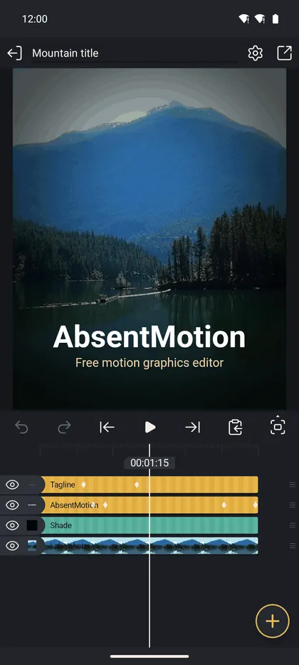

এডিটর স্ক্রিন
টপ বার, প্রিভিউ, প্লে বার এবং কীভাবে অংশগুলো একসাথে কাজ করে।
এডিটরের চারটি অংশ রয়েছে, উপরে থেকে নিচে: টপ বার, প্রিভিউ, প্লে বার এবং টাইমলাইন তার টুলসহ। চওড়া ট্যাবলেট আড়াআড়িভাবে ধরলে প্রিভিউ পুরো প্রস্থ জুড়ে থাকে, এবং নির্বাচিত ক্লিপের টুলগুলো ডান প্রান্তে একটি সরু কলামে খোলে।

প্রতিটি এডিটের পরপরই পরিবর্তনগুলো স্বয়ংক্রিয়ভাবে সংরক্ষিত হয়। এডিট করার সময় প্রতি দুই মিনিটে প্রজেক্টের একটি সংস্করণও রাখা হয় (দেখুন প্রজেক্ট, ব্যাকআপ এবং ইমপোর্ট)। টাইমলাইনে সবচেয়ে উপরের লেয়ারটি সামনের লেয়ার, এবং নতুন লেয়ার সামনে যোগ করা হয়।
ফোনের ব্যাক বোতাম একবারে এক ধাপ পিছিয়ে যায়: এটি প্রিভিউ স্ট্রিপ বন্ধ করে, মাল্টি-সিলেকশন পরিষ্কার করে, ইজিং গ্রাফ বন্ধ করে, একটি খোলা ইফেক্ট ছেড়ে দেয়, একটি প্যানেল ছেড়ে দেয়, লেয়ার ডিসিলেক্ট করে এবং কেবল তখনই এডিটর ছেড়ে দেয়।
টপ বার
টপ বারে কী দেখানো হবে তা নির্ভর করে কী নির্বাচিত আছে তার উপর।
কিছুই নির্বাচিত নেই
- বাম দিকে প্রজেক্ট তালিকায় প্রস্থান।
- প্রজেক্টের নাম। প্রজেক্টের নাম পরিবর্তন করতে এতে ট্যাপ করুন।
- প্রজেক্ট সেটিংস (গিয়ার): নিচে দেখুন।
- এক্সপোর্ট ও শেয়ার (শেয়ার আইকন): এক্সপোর্ট স্ক্রিন খোলে।
একটি লেয়ার নির্বাচিত
- ব্যাক লেয়ারটি ডিসিলেক্ট করে।
- লেয়ারের নাম। নাম পরিবর্তন করতে ট্যাপ করুন; এটি তার টাইমলাইন বারের লেবেলও।
- প্যারেন্ট বোতাম (একটি ড্যাশড স্কয়ার, একটি সলিড স্কয়ার এবং একটি ছোট বৃত্ত)। এটি "None" এবং অন্যান্য প্রতিটি লেয়ার তালিকাভুক্ত করে। একটি নির্বাচন করলে সেই লেয়ারটি প্যারেন্ট হয়: নির্বাচিত লেয়ারটি তখন এটি চলা, ঘোরা বা স্কেল করার সময় অনুসরণ করে, এবং আপনি যখন সেট করেন তখন স্ক্রিনে তার স্থান ধরে রাখে।
- লেয়ার মুছুন (ট্র্যাশ ক্যান) কোনো প্রশ্ন ছাড়াই সাথে সাথে মুছে ফেলে। আনডু এটি ফিরিয়ে আনে। লেয়ারের চিলড্রেন মুক্ত হয়ে যায়।
- লেয়ার মেনু (তিনটি ডট): দেখুন লেয়ার মেনু এবং মাল্টি-সিলেক্ট।
একটি প্যানেল খোলা। টপ বার একটি ব্যাক অ্যারো এবং প্যানেলের নাম দেখায়, যেমন ট্রান্সফর্ম, ফিল ও কালার বা ইফেক্টস।
প্রজেক্ট সেটিংস
গিয়ার একটি শীট খোলে যেখানে নতুন প্রজেক্ট শীটের মতো একই অপশন রয়েছে: আকৃতি (16:9, 9:16, 4:5, 1:1, 4:3 বা একটি কাস্টম অনুপাত), রেজোলিউশন, ফ্রেম রেট এবং ব্যাকগ্রাউন্ড। এগুলো পরিবর্তন করলে কেবল ক্যানভাস পরিবর্তিত হয়; আপনার লেয়ারগুলো পুনরায় স্কেল করা হয় না। পরিবর্তনটি আনডু করা যাবে। ভার্সন ইতিহাস সারিতে একটি আগের সংস্করণ বোতাম রয়েছে।
একটি অ্যাসেট প্রজেক্টের জন্য শীটে প্রিকম্পোজ এবং রি-টাইমিংও রয়েছে: দেখুন অ্যাসেট, টেমপ্লেট এবং প্রিসেট।
প্রিভিউ
প্রিভিউ ক্যানভাস দেখায়। একটি স্বচ্ছ ব্যাকগ্রাউন্ড চেকারবোর্ড হিসেবে দেখায়।
- নির্বাচন। একটি লেয়ার নির্বাচন করতে ট্যাপ করুন (আপনার আঙুলের নিচে সবচেয়ে উপরের লেয়ার)। ডিসিলেক্ট করতে খালি ক্যানভাসে ট্যাপ করুন।
- সরান। নির্বাচিত লেয়ার সরানোর জন্য প্রিভিউয়ের যেকোনো জায়গায় ড্র্যাগ করুন, কেবল লেয়ারের উপরেই নয়।
- স্কেল। নির্বাচিত লেয়ারে আটটি গোল হ্যান্ডেলসহ একটি সাদা আউটলাইন থাকে। একটি কোণা ড্র্যাগ করলে লেয়ারটি সমানভাবে স্কেল হয়; একটি পাশ ড্র্যাগ করলে সেই দিকে প্রসারিত হয়। দুই আঙুলে পিঞ্চ করলেও স্কেল হয়।
- ঘোরান। সাধারণ লেয়ারের জন্য কোনো রোটেট হ্যান্ডেল নেই এবং দুই আঙুলের টুইস্ট নেই। ট্রান্সফর্ম, রোটেট ব্যবহার করুন (দেখুন লেয়ার টুলস)।
- ক্যামেরা লেয়ার। ড্র্যাগ করলে ক্যামেরা প্যান হয় এবং পিঞ্চ করলে এর ভিউ অ্যাঙ্গেল পরিবর্তিত হয়।
- টেক্সট। টেক্সট এডিটরে, টেক্সট ফ্রেমের পাশের হ্যান্ডেলটি র্যাপ প্রস্থ পরিবর্তন করে।
- গাইড। ট্রান্সফর্মে লেয়ার সরানোর সময়, ক্যানভাসের কেন্দ্র বা অন্য লেয়ারের সাথে সারিবদ্ধ হলে পাতলা লাল রেখা দেখা যায়।
ক্যানভাস জুম এবং প্যান
কিছুই নির্বাচিত না থাকলে, দুই আঙুল ক্যানভাস প্যান এবং জুম করে (1 % থেকে 6400 %)। একটি লেয়ার নির্বাচিত থাকলে, প্যান এবং জুম মোড চালু করতে প্রিভিউয়ের উপরে বাম দিকে ছোট ম্যাগনিফায়ার ট্যাপ করুন; তারপর দুই আঙুল ক্যানভাস জুম করে যখন এক আঙুল এখনও লেয়ার সরায়। 100 % এ ফিরে যেতে দুই আঙুলে ডাবল-ট্যাপ করুন, এবং আগের ভিউতে ফিরতে আবার ডাবল-ট্যাপ করুন।
প্রিভিউ স্ট্রিপ
প্লে বারের শেষ বোতাম (প্রিভিউ মোড) প্রিভিউয়ের ডান প্রান্তে একটি সরু স্ট্রিপ খোলে যেখানে উপরে থেকে নিচে এই বোতামগুলো থাকে।
- পিক্সেল প্রিভিউ হার্ড-এজড প্রজেক্ট পিক্সেল দেখায়, জুম ইন করা অবস্থায় উপকারী।
- গ্রিড প্রতি 40 প্রজেক্ট পিক্সেলে একটি গ্রিড ওভারলে করে।
- নির্বাচিত লেয়ারগুলো সোলো করুন অন্য প্রতিটি লেয়ার লুকায়। আবার ট্যাপ করলে অন্য লেয়ারগুলো অর্ধেক অপাসিটিতে আঁকে, এবং তৃতীয়বার ট্যাপ করলে বন্ধ হয়।
- ক্যামেরা ভিউ ক্যামেরা লেয়ারের মাধ্যমে দেখে (প্রজেক্টে একটি থাকলে উপলব্ধ)।
- ফুল, হাফ বা কোয়ার্টার: প্রিভিউের গুণমান। ধীর ফোনে নিম্ন মান দ্রুততর এবং আপনার এক্সপোর্ট পরিবর্তন করে না। এটি সেটিংস-এ প্রিভিউ কোয়ালিটি এর মতো একই সেটিং।
- ফাস্ট ব্লার বা ফুল ব্লার: মোশন ব্লার ইফেক্ট কীভাবে প্রিভিউ করা হয়। ফাস্ট একটি অনুমান; ফুল নির্ভুল এবং ধীর। এক্সপোর্ট সর্বদা নির্ভুল।
- জুম: প্লাস এবং মাইনাস বোতাম এবং বর্তমান শতাংশ।
প্রিভিউতে অন্যান্য জিনিস
- নিচে ডান দিকে গোল অ্যানিমেট বোতামটি একটি ভিজ্যুয়াল লেয়ার নির্বাচিত হলে দেখা যায়: এটি ইন, আউট এবং লুপ অ্যানিমেশন খোলে। দেখুন ট্রানজিশন এবং অ্যানিমেশন।
- নিচে আনডিড/রিডিড নোট দেখায় সর্বশেষ আনডু বা রিডু কী করেছে।
প্লে বার
সাতটি বোতাম, বাম থেকে ডানে।
- আনডু এবং 2. রিডু। অ্যাপটি 200 ধাপ পর্যন্ত রাখে। একটি সম্পূর্ণ ড্র্যাগ বা স্লাইডার মুভ একটি ধাপ হিসেবে গণনা করা হয়। প্রতিটি আনডু বা রিডু "আনডিড: মুভ" এর মতো একটি সংক্ষিপ্ত নোট দেখায়।
- স্কিপ ব্যাক এবং 5. স্কিপ ফরওয়ার্ড পূর্ববর্তী বা পরবর্তী স্টপে লাফ দেয়। কিছুই নির্বাচিত না থাকলে স্টপগুলো প্রজেক্টের শুরু এবং শেষ; একটি লেয়ার নির্বাচিত থাকলে সেগুলো তার শুরু, তার শেষ এবং তার কীফ্রেম। বুকমার্ক সর্বদা স্টপ।
- প্লে / পজ। থেমে থাকা অবস্থায় লুপিং চালু বা বন্ধ করতে প্লে চেপে ধরে রাখুন। শেষ থেকে প্লে করলে আবার শুরু থেকে শুরু হয়।
- কপি এবং পেস্ট ডুপ্লিকেট, কপি, পেস্ট এবং প্রিসেট সংরক্ষণের জন্য একটি মেনু খোলে: দেখুন লেয়ার মেনু এবং মাল্টি-সিলেক্ট।
- প্রিভিউ মোড প্রিভিউ স্ট্রিপ খোলে।
বারের নিচের পাতলা রেখাটি প্রজেক্ট চলার সময় একটি লাইভ লেভেল মিটার: শব্দ louder হওয়ার সাথে সাথে সবুজ, তারপর হলুদ, তারপর লাল। শব্দ ক্লিপ করলে পুরো রেখাটি লাল হয়ে ঝলকায়।
মাল্টি-সিলেক্ট
একটি লেয়ারের সারির চোখ বা নামের এলাকায় চেপে ধরে রাখুন এবং তারপর একসাথে কয়েকটি সারি নির্বাচন করতে উপরে বা নিচে স্লাইড করুন; পরে একটি ট্যাপ সারিগুলো টগল করে। টপ বার রঙ পরিবর্তন করে এবং গ্রুপ, ইফেক্ট, ডিলিট এবং অ্যালাইনমেন্ট বোতাম দেখায়, এবং নিচে ক্লিপ-টাইমিং কমান্ডসহ একটি বার দেখা যায়। সেগুলো সব লেয়ার মেনু এবং মাল্টি-সিলেক্ট-এ বর্ণনা করা হয়েছে।